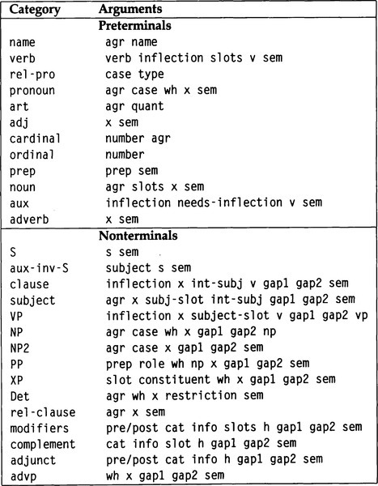

|
paip-ru
1
|
Предпочитаю сердечность грамматике.
-Henry Watson Fowler
The King's English (1906)
В предыдущих двух главах описываются методы написания грамматик и синтаксических анализаторов на основе этих грамматик. Эти методы довольно просто применить к приложениям, таким как проблема с проигрывателем компакт-дисков, где ввод ограничен простыми предложениями, такими как "Play 1 to 8 without 3"(Воспроизвести с 1 по 8 без 3). Но написать грамматику для неограниченного ввода английского языка - серьезная задача. В этой главе разрабатывается грамматика, охватывающая все основные синтаксические конструкции английского языка. Она обрабатывает предложения гораздо большей сложности, такие как "Kim would not have been persuaded by Lee to look after the dog"(Ли не убедил Ким присматривать за собакой). Грамматика не является достаточно всеобъемлющей, чтобы обрабатывать предложения, случайно выбранные из книги, но когда она дополняется подходящей лексикой, она подходит для самых разных применений.
Эта глава организована как экскурсия по английскому языку. Сначала мы охватываем фразы существительных, затем глагольные фразы, предложения(clauses) и утверждения/изречения(sentences). Для каждой категории мы вводим примеры, анализируем их лингвистически и, наконец, показываем правила грамматики определенных предложений, которые соответствуют анализу.
Как должно было быть ясно из предыдущей главы, анализ чаще приводит к усложнению, чем к упрощению. Например, начиная с простого правила, такого как (S --> NP VP), мы вскоре обнаруживаем, что должны добавлять аргументы для обработки согласования, семантики и информации о пропусках(разрывах). Рисунок 21.1 перечисляет грамматические категории и их аргументы. Обратите внимание, что семантический аргумент, sem, всегда является последним, а аккумуляторы разрывов, gap1 и gap2, являются предпоследними, когда они встречаются. Все однобуквенные аргументы обозначают метапеременные; например, каждая фраза существительного (категория NP) будет иметь семантическую интерпретацию, sem, то есть конъюнкцию отношений, включающих переменную x. Точно так же модификаторы hin(hin modifiers) - это переменная, которая ссылается на заголовок, то есть к изменяемой вещи. Другие аргументы и категории будут объяснены по очереди, но полезно иметь эту картинку, чтобы вернуться к ней.
| []() |
|---|

|
| Рисунок 21.1: Грамматические категории и их аргументы |
*(ed: should be a markdown table)*
Самыми простыми фразами существительных являются имена(names) и местоимения(pronouns), например "Kim"(Ким) и "them."(они). Правила для этих случаев просты: мы создаем семантическое выражение из имени или местоимения, и, поскольку разрывов быть не может, два аргумента аккумулятора разрывов являются одинаковыми (?g1). Согласование лица и числа передается в переменной ?agr, и мы также отслеживаем падеж фразы существительного. В английском есть три падежа, которые отражены в определенных местоимениях. В первом лице единственного числа, "I"(я) - это именительный или субъективный падеж, "me"(мне) - винительный или объективный падеж и "my"(мой) - родительный падеж. Чтобы отличить их от родительного падежа, мы называем именительный и объективный падежи общими падежами. Соответственно, эти три случая будут отмечены выражениями (common nom), (common obj), и gen соответственно. Во многих языках мира есть суффиксы(suffixes), обозначающие существительные в том или ином падеже, но в английском нет. Таким образом, мы используем выражение (common ?) Для обозначения существительных.
Мы также различаем фразы существительных, которые можно использовать в вопросах, например "who"(кто), и те, которые нельзя использовать. Переменная ?wh имеет значение +wh для таких фраз существительных, как "who" или "which one", и -wh для фраз без вопросов. Итак, вот правила для имен и местоимений. Предикаты name и pronoun используются для поиска слов в лексиконе.
Существительные во множественном числе могут стоять отдельно в составе фраз существительных, например, "dogs"(собаки), но существительные в единственном числе нуждаются в определителе, например, "the dog"(собака) или "Kim's friend's biggest dog."(самая большая собака друга Кима). Существительные множественного числа также могут иметь определитель, например, "the dogs"(собаки). Категория Det используется для определителей, а NP2 используется для части фразы существительного после определителя:
Наконец, фраза существительного может появляться снаружи конструкции, и в этом случае будет использована фраза существительного, переданная первым аргументом разрыва, но не слова из входных данных. Примером может служить в "Whom does Kim like ␣?"(Кому нравится Ким ?)
Теперь обратимся к сути фразы существительного - категории NP2. Единственное правило для NP2 гласит, что оно состоит из существительного, которому могут предшествовать модификаторы и следовать за ним:
Модификаторы делятся на типы: Дополнения(Complements) - это модификаторы, ожидаемые изменяемой категорией заголовка; они не могут оставаться в одиночестве. Адъюнкты/Добавка(Adjuncts) - это модификаторы, которые не требуются, но несут дополнительную информацию. Различие наиболее очевидно с модификаторами глаголов. В "Kim visited Lee yesterday"(Ким посетил Ли вчера), "visited"(посетил) - это заглавный глагол, "Lee"(Ли) - дополнение(complement), а "yesterday"(вчера) - добавочное(adjunct). Возвращаясь к существительным, в "the former mayor of Boston"(бывший мэр Бостона) "mayor"(мэр) является заглавным существительным, "of Boston"(Бостона) - дополнением (хотя и необязательным), а "former"(бывший) - добвкой(adjunct).
Предикат modifiers принимает восемь аргументов, поэтому понять их все может быть сложно. Первые два аргумента говорят, находимся ли мы до или после головы (pre или post) и какой тип головы мы изменяем (noun(существительное), verb(глагол) или что-то еще). Далее идет аргумент, который передает всю необходимую информацию - в случае с существительными это признак согласования(agreement). Четвертый аргумент - это список ожидаемых дополнений(complements), здесь называемых ?slots. Далее следует метапеременная, используемая для обозначения головы. Последние три аргумента - это два аккумулятора разрывов и семантика, которые здесь работают так же, как мы видели ранее. Обратите внимание, что в лексиконе для каждого Noun(Существительного) может быть список дополнений(complements), которые рассматриваются как модификаторы пост-существительного(postnoun), но в качестве модификаторов перед существительным могут быть только добления(adjuncts). Также обратите внимание, что разрывы могут появляться в постмодификаторах, но не в предмодификаторах. Например, у нас может быть "What is Kevin the former mayor of ␣?"(Кто такой Кевин, бывший мэр ?), где ответ может быть "Boston"(Бостон). Но даже несмотря на то, что мы можем построить фразу существительного, например "the education president"(президент образования), где "education"(образование) является пред-существительным модификатором "president"(президент), мы не можем построить "* What is George the ␣ president?,"(Что такое Джордж, президент?), имея в виду, что ответом будет "education"(образование).
Возможны четыре варианта модификации. Во-первых, дополнение(complement) - это своего рода модификатор. Во-вторых, если дополнение помечено как необязательное, его можно пропустить. В-третьих, на входе может появиться адъюнкт/добавка(adjunct). В-четвертых, если не ожидается никаких дополнений, то никаких модификаторов быть не должно. Следующие правила реализуют эти четыре случая:
Нам нужно сказать больше о списке дополнений или слотов, которые могут быть связаны со словами в лексиконе(lexcion). Каждый слот представляет собой список формы (role number form)/(роль номер форма), где роль относится к некоторому семантическому отношению, число указывает порядок дополнений, а форма - это тип ожидаемого составляющего: фраза существительного, глагольная фраза, или что угодно. Подробности будут рассмотрены в следующем разделе о глагольных фразах, а complement/дополнение будет рассмотрено в разделе о XP. А пока приведем единственный пример. Список дополнений для одного смысла глагола "visit"(посетить):
Это означает, что первое дополнение, субъект(подлежащее), является фразой существительного, которая выполняет роль агента, а второе дополнение также является фразой существительного, которая выполняет роль объекта.
Есть два основных типа добавок/добавлений(adjuncts) пред существительных. Чаще всего используются прилагательные(adjectives), например, "big slobbery dogs"(большие слюнявые собаки). Существительные также могут быть добавлениями(adjuncts), как в "water meter"(водомер) или "desk lamp"(настольная лампа). Здесь ясно, что второе существительное - голова(главное), а первое - модификатор: desk lamp(настольная лампа) - это лампа, а не стол. Они известны как соединения существительного и существительного. В следующих правилах обратите внимание, что нам не нужно говорить, что допускается более одного прилагательного(adjective); это обрабатывается правилами для modifiers.
После существительного существует более широкий набор модификаторов. У некоторых существительных есть дополнения(complements), которые в основном являются предложными фразами(prepositional phrases), например, "mayor of Boston"(мэр Бостона). Они будут рассмотрены, когда мы перейдем к лексическим статьям для существительных. Предложные фразы могут быть добавлениями(adjuncts) к существительным или глаголам, например, "man in the middle"(человек посередине) и "slept for an hour"(поспал часок). Мы можем написать одно правило для обоих случаев:
Вот правила для предложных фраз, которые могут быть либо предлогом(preposition), за которым следует фраза существительного, либо могут быть разрывом, например, "to whom are you speaking ␣?"(с кем вы говорите & blank;?) Предлог всегда находится в объективном падеже: "with him"(с ним), а не "*with he"(с ним???с него).
Существительные могут быть изменены причастиями(participles) настоящего времени, причастиями прошедшего времени и относительными придаточными предложениями. Примерами являются "the man eating the snack"(мужчина, который ест закуску), "the snack eaten by the man"(закуска, которую съел мужчина) и "the man that ate the snack"(мужчина, который ел закуску) соответственно. Мы увидим, что каждый глагол в лексиконе помечен перегибом(inflection), и что маркер -ing используется для причастий настоящего времени, а -en - для причастий прошедшего времени. Детали clause будут рассмотрены позже.
Возможно иметь относительное предложение, в котором речь идет об объекте, а не о субъекте: "the snack that the man ate"(закуска, которую съел человек). В таком относительном предложении относительное местоимение необязательно: "The snack the man ate was delicious"(Закуска, которую ел человек, была восхитительна). Следующие правила гласят, что если относительное местоимение опущено, то изменяемое существительное должно быть объектом, а относительное предложение должно включать подлежащее внутри. На это указывает константа int-subj.
Следует отметить, что редко, но возможно, встречаются имена и местоимения с модификаторами: "John the Baptist"(Иоанн Креститель), «прекрасная Рита, метровая горничная», «Люси в небе с бриллиантами», «Сильвия в бухгалтерии на 42 этаже. , "" та, которой нужно повиноваться ". Здесь и в этой главе мы будем поднимать вероятность таких редких случаев, оставляя их в качестве упражнений для читателя.
Мы рассмотрим три типа определителей. Самым простым является артикль: «собака» или «собаки». Также разрешены местоимения в родительном падеже, например «ее собака», и числа, например, «три собаки». Семантическая интерпретация определителя-фразы имеет форму (* ограничение переменной квантификатора *). Например, (a? X (dog? X)) или ((number 3)? X (dog? X)).
Это наиболее важные типы детерминаторов, но есть и другие, и есть пре- и постдетерминаторы, которые объединяются в ограниченные комбинации. Предопределители включают все, оба, половину, двойную, двойную и тому подобное. Постдетерминаторы включают каждый, многие, несколько и несколько. Таким образом, мы можем сказать «все ее многочисленные хорошие идеи» или «все люди короля». Но мы не можем сказать «* все много идей» или «* наши дети». Детали сложны и опускаются в этой грамматике.
Теперь, когда мы определили модификаторы, глагольные фразы сделать проще. На самом деле нам нужно всего два правила. Первая гласит, что глагольная фраза состоит из глагола, которому необязательно предшествуют модификаторы, и что значение глагольной фразы включает тот факт, что подлежащее выполняет некоторую роль:
Категория VP принимает семь аргументов. Первый - это склонение/изменение(inflection), которое представляет собой время глагола. Чтобы описать возможности этого аргумента, нам нужен быстрый обзор некоторых основ лингвистики. В предложении должен быть конечный глагол(finite verb), означающий глагол в настоящем или прошедшем времени. Таким образом, мы говорим: "Kim likes Lee,"(Ким нравится Ли), а не "*Kim liking Lee". Согласование подлежащего(субьекта) и сказуемого(предиката) действует для конечных глаголов, но не для любого другого времени. Другие времена появляются как дополнения к другим глаголам. Например, дополнение к "want" - это инфинитив: "Kim wants *to like* Lee"(Kim хочет нравиться Lee), а дополнение к модальному вспомогательному глаголу "would" - это не бесконечный глагол: "Kim would *like* Lee.". Если бы это было в настоящем времени, это было бы "likes", а не "like". Аргумент склонения/изменения принимает одну из форм в таблице:
| Expression | Type | Example |
|---|---|---|
(finite ?agr present) | present tense | eat, eats |
(finite ?agr past) | past tense | ate |
nonfinite | nonfinite | eat |
infinitive | infinitive | to eat |
-en | past participle | eaten |
-ing | present participle | eating |
Второй аргумент - это метапеременная, которая относится к субъекту, а третий - слот дополнения субъекта. Мы принимаем соглашение, согласно которому слот подлежащего всегда должен быть первым среди дополнений глагола. Остальные слоты обрабатываются модификаторами postverb. Четвертый аргумент - это метапеременная, указывающая саму глагольную фразу. Последние три - знакомые аргументы разрыв и семантика(и третий???). Например, если глагольная фраза представляет собой единственное слово "slept"спал), то семантика глагольной фразы будет (and (past ?v) (sleep ?v)). Конечно, по этому правилу также будут обрабатываться наречия(adverbs), дополнения(complements) и добавления(adjuncts).
Второе правило для глагольных фраз касается вспомогательных глаголов(auxiliary verbs), таких как "have"(иметь), "is"(есть) и "would"(будет). Каждый вспомогательный глагол (или aux) производит глагольную фразу с определенным изменением/склонением, когда за ней следует глагольная фраза с требуемым изменением. Чтобы повторить пример, "would"(будет) дает конечную фразу, за которой следует бесконечный(nonfinite) глагол. "Have" дает неопределенное значение, если за ним следует причастие прошедшего времени. Таким образом, "would have liked" - это конечная глагольная фраза.
Мы также должны учитывать отрицание. Слово "not"(не) может изменять основной глагол, но может следовать за вспомогательным глаголом. То есть мы не можем сказать "*Kim not like Lee"(Ким не любит Ли), но мы можем добавить вспомогательный элемент, чтобы получить "Kim does not like Lee.".
Наречия могут служить дополнением до или после глагола: "to boldly go"(смело идти), "to go boldly". Существуют некоторые ограничения относительно того, где они могут возникать, но трудно придумать твердые правила; здесь мы разрешаем любое наречие где угодно. Мы определяем категорию advp для фразы наречия, но в настоящее время ограничиваем ее одним наречием.
Предложение состоит из подлежащего/субъекта(subject ), за которым следует предикат/сказуемое(predicate). Однако субъект не обязательно должен быть реализован непосредственно перед сказуемым. Например, в фразе "Alice promised Bob to lend him her car"(Алиса обещала Бобу одолжить ему свою машину) есть инфинитивное предложение, которое состоит из предиката "to lend him her car"(одолжить ему свою машину) и подлежащего "Alice"(Алиса). Высказывание(sentence) в целом - это еще одно предложение. Таким образом, в нашем анализе предложение - это подлежащее, за которым следует глагольная фраза, с возможностью того, что субъект будет конкретизирован каким-то из аргументов разрыва:
Теперь есть две возможности для subject. В первом случае он уже проанализирован, и мы берем его из списка gap(разрыва). Если это так, то нам также необходимо найти признак согласования субьекта. Если субьектом была фраза существительного, соглашение будет присутствовать в списке разрывов. Если его не было, то согласование от третьего лица единственного числа. Примером этого является " *That the Red Sox won* surprises me"(Что Red Sox выиграл меня удивляет), где выделенная курсивом фраза субьект не-NP. Тот факт, что нам нужно использовать "surprises"(сюрпризы), а не "surprise"(удивление), указывает на то, что это слово от третьего лица единственного числа. Мы увидим, что для этого используется код (- - + -).
Во втором случае мы просто разбираем именную фразу как подлежащее. Обратите внимание, что четвертый аргумент для subject - это ext-subj или int-subj в зависимости от того, реализуется ли субъект внутренне или внешне. Это будет важно, когда мы рассмотрим предложения в следующем разделе. Если это еще не было ясно, второй аргумент для clause и subject - это метапеременная, представляющая тему.
Наконец, правила согласования субъект-предикат говорят, что только конечные предикаты должны согласовываться со своим субъектом:
В предыдущей главе мы разрешили использовать только простые повествовательные предложения. Текущая грамматика поддерживает команды и четыре типа вопросов в дополнение к декларативным предложениям. Она также поддерживает тематическое оформление: размещение не субъекта(nonsubject) в начале предложения, чтобы подчеркнуть его важность, например, в словах "*Smith* he says his name is"(Смит он говорит, что его зовут) или *"Murder,* she wrote"(Убийство, написала она) или *"In God* we trust"(В Бога мы верим). В последнем примере первой встречается предложная(prepositional phrase), а не фраза существительного. Также возможно иметь субъект, который не является фразой существительного: *"That the dog didn't bark* puzzled Holmes."(То, что собака не лаяла, озадачило Холмса). Для поддержки всех этих возможностей мы вводим новую категорию XP, которая обозначает любые фразы. Тогда декларативное предложение - это просто XP, за которым следует предложение, где предметом предложения может оказаться, а может и не оказаться XP:
Как оказалось, это правило также служит для двух типов вопросов. В самом простом вопросе предметом является вопросительная фраза существителього: "Who likes Lee?"(Кому нравится Ли?) или "What man likes Lee?"(Какой мужчина любит Ли?). Другой вид - это так называемый вопрос-эхо *, который может использоваться только как ответ на другое утверждение: если я скажу вам, что Ким нравится Джерри Льюис, вы можете разумно ответить: "Kim likes *who</em>?"(Ким нравится кто?). Оба эти типа вопросов имеют ту же структуру, что и повествовательные предложения, и поэтому обрабатываются одним и тем же правилом.
В следующей таблице перечислены некоторые изречения, которые могут быть проанализированы с помощью этого правила, с указанием опыта и темы каждого из них.
| Sentence | XP | Subject |
|---|---|---|
| Kim likes Lee | Kim | Kim |
| Lee, Kim likes | Lee | Kim |
| In god, we trust | In god | we |
| That Kim likes Lee amazes | That Kim likes Lee | That Kim likes Lee |
| Who likes Lee? | Who | Who |
Самый распространенный тип команды вообще не имеет темы: "Be quiet"(Тихо) или "Go to your room"(Иди в свою комнату). Если тема отсутствует, это означает, что команда относится к вам, адресату команды. Субъект также может быть упомянута явно, и это может быть "you"(ты), например "You be quiet"(ты - молчи), но это не обязательно: "Somebody shut the door"(Кто-нибудь, закройте дверь) или "Everybody sing along"(Все подпевают). Мы предоставляем правило только для команд с опущенным субъектом, так как бывает сложно отличить команду с субъектом от декларативного предложения. Обратите внимание, что команды всегда не бесконечны(nonfinite).
Другая форма команды начинается с "let"(давай), например, "Let me see what I can do"(дай мне посмотреть, что я могу сделать) и "Let us all pray"(давайте все помолимся). Второе слово лучше рассматривать как объект "let", а не как подлежащее в предложении, так как подлежащим должно быть "I"(я) или "we"(мы). Этот вид команд может обрабатываться с помощью лексической записи для "let", а не с помощью дополнительного правила.
Теперь рассмотрим вопросы(questions). В вопросах, на которые можно ответить положительно или отрицательно, подлежащее и вспомогательный глагол меняются местами: "Did you see him?"(Вы его видели?). или "Should I have been doing this?"(Я должен был это делать?) Последний пример показывает, что перед подлежащим(субъектом) стоит только первый вспомогательный глагол. Категория aux-inv-S используется для обработки этого случая:
Вопросы, начинающиеся с wh-фразы, также имеют перед подлежащим вспомогательный глагол, например, "Who did you see?"(Кого вы видели?) или "Why should I have been doing this?"(Почему я должен был это делать?) Первая составляющая также может быть предложной фразой: "For whom am I doing this?"(Для кого я это делаю?) Следующее правило анализирует XP, которая должна иметь функцию +wh, а затем анализирует aux-inv-S, чтобы прийти к вопросу:
Вопрос также может быть обозначен возрастающей интонацией в том, что в противном случае было бы декларативным заявлением: "You want some?"(Вы хотите немного?) Поскольку у нас нет информации об интонации, мы не будем включать такие вопросы.
Реализация для aux-inv-S проста: проанализируйте вспомогательное, а затем предложение, сделав паузу для поиска модификаторов между ними. (Пока что в этой позиции разрешен только модификатор "not"(не).)
Следует рассмотреть еще один случай. Глагол "to be"(быть) - самый идиосинкразический в английском языке. Это единственный глагол, у которого есть отличия от всего, кроме третьего лица единственного числа. И это также единственный глагол, который может использоваться в aux-inv-S без главного глагола. Примером этого является "Is he a doctor?,"(Он врач?), Где "is" явно не вспомогательный, потому что нет главного глагола, к которому он мог бы быть вспомогательным. Другой глагол нельзя использовать таким образом: "*Seems he happy?"(Кажется, он счастлив?) и "* Did they it?"(Они это сделали?) вне грамматики. Единственная возможность - это "have"(иметь), как в "Have you any wool?"(У тебя есть шерсть?), Но такое использование редко.
Следующее правило анализирует глагол, проверяет, является ли он версией "be"(быть), а затем анализирует подлежащее и модификаторы глагола.
Все, что осталось в нашей грамматике, - это категория XP. XP используются двумя способами: во-первых, фраза может быть экстраполирована, например, "*In god* we trust", где "in god"(в Бога) будет анализироваться как XP, а затем помещаться в список gap(разрыва) до тех пор, пока его нельзя будет убрать. как добавка(adjunct) к "trust"(верим). Во-вторых, фраза может быть дополнением(complement), например, "He wants *to be a fireman"*(Он хочет быть пожарным), где инфинитивная фраза является дополнением "wants"(хочет).
Как оказалось, количество информации, которая должна появиться в списке gap(разрывов), немного отличается от информации, которая появляется в слоте дополнения(complement). Например, одно из значений глагола "want"(хочу) имеет следующий список дополнений:
Это говорит о том, что первое дополнение (подлежащее/субъект) - это фраза существительного, которая служит агентом желания, а вторая - инфинитивная глагольная фраза, которая является концепцией желания. Субъект этой глагольной фразы совпадает с субъектом желания, поэтому в "She wants to go home"(Она хочет пойти домой) именно она и хочет, и идет. (Сравните это с фразой "He persuaded her to go home"(Он убедил ее пойти домой), где именно он убеждает, а она идет.)
Но когда мы помещаем фразу сущетствительного в список gap(разрывов), нам нужно указать ее номер и регистр, а также тот факт, что это NP и ее метапеременная, но нам не нужно включать тот факт, что это агент. Это различие означает, что у нас есть два варианта: либо мы можем объединить понятия слотов и списков разрывов, чтобы они использовали общую нотацию, содержащую всю информацию, которую можно использовать, либо нам нужен какой-то способ сопоставления между ними. Я сделал второй выбор на том основании, что каждое обозначение было достаточно сложным, без дополнительной информации.
Отношение slot-constituent выполняет отображение между используемым обозначением слота, используемым для дополнений, и составляющим обозначением, используемым в списках разрывов(gap). Существует восемь типов дополнений, пять из которых могут появляться в списках разрывов: фразы существительных, предложения, предложные фразы, слово "it"(оно) (например, "it is raining"(идет дождь)) и наречные фразы(adverbial phrases). Три фразы, которые разрешены только в качестве дополнения, - это глагольные фразы, частицы (например, "up"(вверх) в "look up the number"(поиске числа)) и прилагательные(adjectives). Вот соответствие между двумя обозначениями. *** означает отсутствие сопоставления:
Теперь мы готовы определить дополнение(complement). Она берет описание слота, сопоставляет его с составной частью, а затем вызывает XP для анализа этой составляющей:
Категория XP принимает семь аргументов. Первые два - это слот, который мы пытаемся заполнить, и компонент, который нам нужен для его заполнения. Третья используется для любой дополнительной информации, а четвертая - метапеременная для фразы. Последние три предоставляют разрыв(gap) и смысловую информацию.
Вот первые пять категорий XP:
Категория opt-word анализирует слово, что может быть необязательным. Например, одно значение "know"(знать) подкатегории для предложения с необязательным "that"(что): мы можем сказать либо "I know that he's here"(Я знаю, что он здесь), либо "I know he's here"(Я знаю, что он здесь). Таким образом, список дополнений для "know"(знать) содержит слот (con 2 (clause (that) (finite ? ?))). Если бы "that"(это) было обязательным, вокруг него не было бы скобок.
Наконец, вот три XP, которые нельзя экстраполировать:
Каждая категория слов имеет правило, которое ищет слова в лексиконе и присваивает им нужные характеристики. Отношение word(слово) используется для доступа к лексикону. Мы опишем самый сложный класс слов, verb(глагол), и просто перечислим остальные.
Глаголы сложны, потому что они часто многозначны - имеют много значений. Кроме того, каждое значение может иметь несколько различных списков дополнений(complement). Таким образом, запись для глагола в лексиконе будет состоять из формы глагола, его изменения(inflection) и списка значений, где каждое значение представляет собой семантику, за которой следует список возможных списков дополнений. Вот запись для глагола "sees"(видит), указывающая на то, что это глагол в настоящем времени с тремя смыслами. Смысл понимания имеет два дополнительных списка, которые соответствуют "He sees"(Он видит) и "He sees that you are right"(Он видит, что вы правы»). Смысл look(взгляд) имеет один дополнительный список, соответствующий "He sees the picture"(Он видит картинку), а смысл dating(свидание), соответствующее "He sees her (only on Friday nights)"(Он увидит ее (только в пятницу вечером)), имеет тот же дополнительный список.
Категория verb(глагол) принимает пять аргументов: сам глагол, его изменения, его список дополнений, его метапеременных и его семантику. Отношения member используются для выбора смысла из списка смыслов и дополнительного списка из списка списков, а семантика строится из семантического предиката для выбранного смысла и метапеременной для глагола:
Трудно уметь(знать как) перевести временную(tense) информацию в смысловую интерпретацию. Разные приложения будут иметь разные модели времени и, следовательно, будут нуждаться в разных интерпретациях. Отношение tense-sem дает семантику для каждого времени. Вот очень простое определение tense-sem:
Вспомогательные глаголы и модальные глаголы указаны отдельно:
Существительные, местоимения и имена также указаны отдельно, хотя у них много общего. Для местоимений мы используем квантификатор wh или pro, в зависимости от того, является это местоимением wh-pronoun или нет.
Вот правила для остальных классов слов:
Сам лексикон состоит из большого количества записей в отношении word(слово), и, безусловно, можно было бы попросить составителя словаря составить длинный список фактов word. Но чтобы облегчить чтение и запись лексики, мы используем три полезных инструмента. Во-первых, введем систему сокращений(abbreviations). Общие выражения могут быть сокращены с помощью символа, который будет расширен word.. Во-вторых, мы предоставляем макрос verb и noun для охвата двух наиболее сложных классов слов. В-третьих, мы предоставляем макрос word, который делает записи в хеш-таблице. Это более эффективно, чем составление отношения слова, состоящего из сотен предложений Пролога.
Реализация этих инструментов оставлена для следующего раздела; здесь мы показываем фактическую лексику, начиная со списка сокращений.
Первый набор сокращений определяет особенности соглашения. Очевидный способ добиться согласия - использовать две функции: одну для лица(person), а другую - для числа. Таким образом, можно представить единственное число от первого лица (1 sing). Проблема возникает, когда мы хотим описать глаголы. Каждый глагол, кроме "be"(быть), делает различие только между третьим лицом единственного числа и всеми остальными. Мы не хотим делать в лексиконе пять отдельных записей, чтобы представить все остальные. Одна альтернатива - использовать функцию согласования в виде набора возможных значений, чтобы все остальные были единым набором из пяти значений, а не из пяти отдельных значений. Это имеет большое значение для сокращения количества откатов. Проблема с этим подходом состоит в том, чтобы отслеживать, когда пересекать множества. Другой подход состоит в том, чтобы сделать функциональность согласования списком из четырех двоичных функциональностей, по одной для единственного числа от первого лица, от первого лица во множественном числе, от третьего лица в единственном числе и от третьего лица во множественном числе. Тогда "все остальные" могут быть представлены списком, который отрицателен для третьего признака и неизвестен для всех остальных. В этой схеме нет способа отличить второе лицо единственного числа от множественного числа, но в английском языке такое различие не проводится. Вот необходимые сокращения:
Следующий шаг - предоставить сокращения для некоторых распространенных списков дополнений глаголов:
``lisp (abbrev v/intrans ((agt 1 (NP ?)))) (abbrev v/trans ((agt 1 (NP ?)) (obj 2 (NP ?)))) (abbrev v/ditrans ((agt 1 (NP ?)) (goal 2 (NP ?)) (obj 3 (NP ?)))) (abbrev v/trans2 ((agt 1 (NP ?)) (obj 2 (NP ?)) (goal 2 (PP to ?)))) (abbrev v/trans4 ((agt 1 (NP ?)) (obj 2 (NP ?)) (ben 2 (PP for ?)))) (abbrev v/it-null ((nil 1 it))) (abbrev v/opt-that ((exp 1 (NP ?)) (con 2 (clause (that) (finite ? ?))))) (abbrev v/subj-that ((con 1 (clause that (finite ? ?))) (exp 2 (NP ?)))) (abbrev v/it-that ((nil 1 it) (exp 2 (NP ?)) (con 3 (clause that (finite ? ?))))) (abbrev v/inf ((agt 1 (NP ?x)) (con 3 (VP infinitive ?x)))) (abbrev v/promise ((agt 1 (NP ?x)) (goal (2) (NP ?y)) (con 3 (VP infinitive ?x)))) (abbrev v/persuade ((agt 1 (NP ?x)) (goal 2 (NP ?y)) (con 3 (VP infinitive ?y)))) (abbrev v/want ((agt 1 (NP ?x)) (con 3 (VP infinitive ?x)))) (abbrev v/p-up ((agt 1 (NP ?)) (pat 2 (NP ?)) (nil 3 (P up)))) (abbrev v/pp-for ((agt 1 (NP ?)) (pat 2 (PP for ?)))) (abbrev v/pp-after ((agt 1 (NP ?)) (pat 2 (PP after ?))))
Вспомогательные глаголы достаточно просты, чтобы их можно было описать непосредственно словом макрос. Каждая запись перечисляет само вспомогательное средство, время, которое оно используется для построения, и время, за которым оно должно следовать. Вспомогательные элементы "have" и "do" перечислены вместе с "to", которое используется для создания инфинитивных предложений и, таким образом, может рассматриваться как вспомогательное.
Вспомогательное "be" является особенным: помимо использования в качестве вспомогательного и основного глагола, оно также используется в пассивных формах и в качестве основного глагола в предложениях с инвертированными вспомогательными словами. Функция copula используется для отслеживания всех этих случаев использования. Она будет определена в следующем разделе, но вы можете видеть, что она принимает два аргумента, список значений для основного глагола и список записей для вспомогательного глагола. Эти три смысла соответствуют примерам "He is a fool"(Он дурак), "He is a Republican"(Он республиканец) и "He is in Indiana"(Он в Индиане) соответственно.
Ниже приведены модальные вспомогательные глаголы. Опять же, для них сложно указать семантику. Слово "not"(не) также указано здесь; это не вспомогательное средство, но оно их модифицирует.
Не было сделано никаких попыток серьезно относиться к существительным. Мы перечисляем здесь достаточное количество существительных, чтобы некоторые примеры работали. Первое существительное показывает список дополнений, достаточный, чтобы разобрать "the destruction of the city by the enemy"(разрушение города противником).
Здесь мы перечисляем именительные, объективные и родительные местоимения, за которыми следуют вопросительные и относительные местоимения. Не хватает только возвратных местоимений, таких как "myself"(я).
Для того или иного примера удобны следующие имена:
Вот несколько прилагательных:
Приведенные здесь наречия включают вопросительные:
Общие артикли перечислены здесь:
Мы можем воспользоваться возможностями format, чтобы пополнить лексикон. Чтобы выйти за пределы 20, нам понадобится подграмматика чисел.
Вот довольно полный список предлогов:
В этом разделе описывается реализация макросов word, verb, noun и abbrev. Сокращения(Abbreviations) хранятся в хеш-таблице. Макрос abbrev и функции get-abbrev и clear-abbrevs определяют интерфейс. Мы увидим, как расширять аббревиатуры позже.
Слова(words) также хранятся в хеш-таблице. В настоящее время слова являются символами, но, возможно, было бы лучше использовать для слов строки, поскольку тогда мы могли бы поддерживать информацию о заглавных буквах. Макрос word или функция add-word добавляет слово в лексикон. При использовании в качестве индекса в хэш-таблице каждое слово возвращает список записей, где первый элемент каждой записи является категорией слова, а остальные элементы зависят от категории.
Функция expand-abbrevs-and-variables раскрывает сокращения и заменяет структуры переменных для символов начинающиеся с ?. Это упрощает изготовление копии структуры, которая понадобится позже.
Теперь мы можем хранить слова в лексиконе, но нам нужен какой-то способ их извлечения. Функция word/n принимает слово (которое должно быть преобразовано в символ), категорию и необязательную дополнительную информацию и находит записи в лексиконе для этого слова, которые объединяются с категорией и дополнительной информацией. Для каждого совпадения она вызывает предоставленное продолжение. Это означает, что word/n заменяет длинный список словесных фактов. Есть три отличия:word/n хеширует, поэтому она будет быстрее; она инкрементна (вы можете добавлять слово за раз без необходимости перекомпилировать); и её нельзя использовать, когда слово не связано. (Нетрудно изменить её для обработки несвязанного слова с помощью maphash, но есть более эффективные способы решения этой проблемы.)
Обратите внимание, что word/n` не следует нашему соглашению помещать продолжение последним. Поэтому нам потребуются следующие дополнительные функции:
Мы могли бы создать целый лексикон с помощью макроса word, но для некоторых классов удобно создавать определенные макросы. Макрос noun(существительное) используется для создания двух записей, одна для единственного числа, а вторая - для множественного. Аргументы - это существительное с основанием, за которым может следовать множественное число (по умолчанию - основание плюс "s"), семантика (по умолчанию - основание) и список дополнений. Массовые существительные, такие как "furniture"(мебель), имеют только одну запись и помечены звездочкой вместо множественного числа.
Глаголы более сложные. Каждый глагол состоит из семи элементов: основного или нефинитного, настоящего времени единственного и множественного числа, прошедшего времени, причастия прошедшего времени, причастия настоящего и пассивного. Макрос verb автоматически генерирует все семь записей. Глаголы, у которых нет всех из них, могут обрабатываться отдельными вызовами word. Мы автоматически обрабатываем орфографию для простых случаев добавления "s," "ing" и "ed," и, возможно, удаления конечной гласной. Необходимо явно указать более неправильное написание. Вот три примера использования verb:
А вот определение макроса:
При этом используются несколько вспомогательных функций. Во-первых, strip-vowel удаляет гласную, если это последний символ данного аргумента. Идея состоит в том, что для глагола, такого как "fire"(гореть), удаление гласного дает "fir", из которого мы можем автоматически получить "fired" и "firing".
Мы также предоставляем функцию для автоматической генерации пассивного смысла с соответствующими списками дополнений. Идея состоит в том, что слот подлежащего активного глагола становится необязательным слотом, отмеченным предлогом "by", и любой слот, отмеченный цифрой 2, может быть повышен до подлежащего(subject):
Наконец, мы предоставляем специальную функцию только для определения связки "be"(быть).
Остальные функции используются для тестирования, отладки и расширения грамматики. Во-первых, нам нужны функции, чтобы очистить все, чтобы мы могли начать заново. Эти функции можно разместить в верхней части файлов лексики и грамматики соответственно:
Тестирование может быть выполнено с помощью run-examples, но удобно предоставить другой интерфейс, макрос try (и соответствующую ему функцию try-dcg). И макрос, и функцию можно вызывать тремя способами. Без аргументов запускаются все примеры, хранящиеся в: ex. Когда указано имя категории, запускаются все примеры только для этой категории. Наконец, пользователь может указать как название категории, так и список слов, чтобы проверить, могут ли эти слова быть проанализированы как эта категория. Эта опция доступна только для категорий, перечисленных в определении:
Для поддержки предикатов: test, созданных в различных правилах грамматики, нам нужны определения предикатов Пролога if, member, =, numberp и atom. Они повторяются здесь:
Вот несколько примеров того, что может обрабатывать парсер. Я отредактировал вывод, изменив имена переменных, такие как ?168, на более читаемые имена, такие как ?J. Первые два примера показывают, что поддерживаются вложенные предложения и что мы можем извлечь составляющую из вложенного предложения:
В следующем примере "when"(когда) можно интерпретировать как вопрос о времени любого из трех событий: обещания, убеждения или сна. Грамматика находит все три.
В следующем примере показаны вспомогательные глаголы и отрицание. Это неоднозначно между интерпретацией, в которой Ким ищет Ли, и интерпретацией, в которой Ким смотрит на что-то неопределенное от имени Ли.
Следующие два примера однозначны:
Последний пример кажется недвусмысленным, но синтаксический анализатор находит четыре отдельных анализа. Первая - это очевидная интерпретация, когда поиск выполняется быстро, а вторая - быстро изменяет удивление. Последние две интерпретации такие же, как и первые две; они являются артефактами поискового процесса. Должна быть оборудована процедура устранения неоднозначности, чтобы отсеять такие дубликаты.
Chapter 20 provides some basic references on natural language. Here we will concentrate on references that provide:
There are a few good textbooks that partially address both issues. Both Winograd (1983) and Allen (1987) do a good job of presenting the major grammatical features of English and discuss implementation techniques, but they do not provide actual code.
There are also a few textbooks that concentrate on the second issue. Ramsey and Barrett (1987) and Walker et al. (1990) provide chapter-length implementations at about the same level of detail as this chapter. Both are recommended. Pereira and Shieber 1987 and Gazdar and Mellish 1989 are book-length treatments, but because they cover a variety of parsing techniques rather than concentrating on one in depth, they are actually less comprehensive.
Several linguists have made serious attempts at addressing the first issue. The largest is the aptly named A Comprehensive Grammar of Contemporary English by Quirk, Greenbaum, Leech and Svartik (1985). More manageable (although hardly concise) is their abridged edition, A Concise Grammar of Contemporary English. Both editions contain a gold mine of examples and facts about the English langauge, but the authors do not attempt to write rigorous rules. Harris (1982) and Huddleston (1984) offer less complete grammars with greater linguistic rigor.
Naomi Sager (1981) presents the most complete computerized grammar ever published. The grammar is separated into a simple, neat, context-free component and a rather baroque augmentation that manipulates features.
Exercise 21.1 [m] Change the grammar to account better for mass nouns. The current grammar treats mass nouns by making them vague between singular and plural, which is incorrect. They should be treated separately, since there are determiners such as "much" that work only with mass nouns, and other determiners such as "these" that work only with plural count nouns.
Exercise 21.2 [m] Change the grammar to make a distinction between attributive and predicative adjectives. Most adjectives fail into both classes, but some can be used only attributively, as in "an *utter* fool" but not " * the fool is *utter."* Other adjectives can only be used predicatively, as in "the woman was *loath* to admit it" but not "*a *loath* (to admit it) woman."
Exercise 21.3 [h] Implement complement lists for adjectives, so that "loath" would take an obligatory infinitive complement, and "proud" would take an optional (PP of) complement. In connection to the previous exercise, note that it is rare if not impossible for attributive adjectives to take complements: "he is proud," "he is proud of his country" and "a proud citizen" are all acceptable, but "*a proud of his country citizen" is not.
Exercise 21.4 [m] Add rules to advp to allow for adverbs to modify other adverbs, as in "extremely likely" or "very strongly."
Exercise 21.5 [h] Allow adverbs to modify adjectives, as in "very good" or "really delicious." The syntax will be easy, but it is harder to get a reasonable semantics. While you're at it, make sure that you can handle adjectives with so-called noninter- sective semantics. Some adjectives can be handled by intersective semantics: a red circle is something that is red and is a circle. But for other adjectives, this model does not work: a former senator is not something that is former and is a senator-a former senator is not a senator at all. Similarly, a toy elephant is not an elephant.
The semantics should be represented by something doser to ((toy elephant) ?x) rather than (and (toy ?x) (elephant ?x)).
Exercise 21.6 [m] Write a function that notices punctuation instead of ignoring it. It should work something like this:
Exercise 21.7 [m] Change the grammar to allow optional punctuation marks at the end of sentences and before relative clauses.
Exercise 21.8 [m] Change the grammar to allow conjunction with more than two elements, using commas. Can these rules be generated automatically by conj-rule?
Exercise 21.9 [h] Make a distinction between restrictive and nonrestrictive relative clauses. In "The truck *that has 4-wheel drive* costs $5000," the italicized relative clause is restrictive. It serves to identify the truck and thus would be part of the quantifier's restriction. The complete sentence might be interpreted as:
Contrast this to "The truck, which has 4-wheel drive, costs $5000." Here the relative clause is nonrestrictive and thus belongs outside the quantifier's restriction:
Part V The Rest of Lisp !!!(p) {:.parttitle}
1.8.13